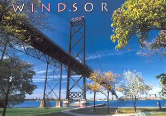
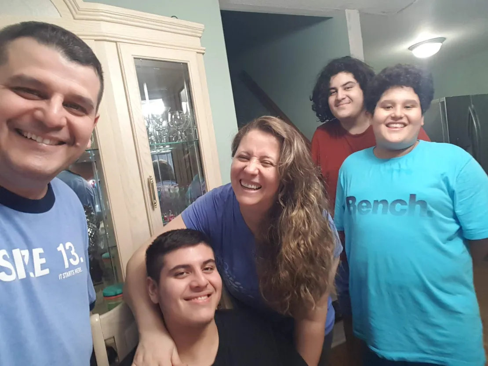

Education

I began my education at West Gate Elementary School, where I built the foundation for my learning. I liked working on projects where I could build or design things, and I often found myself interested in how computers and technology worked. Those experiences gave me an early curiosity about the digital world, even if I didn’t fully understand it at the time. When the pandemic hit, I spent Grade 8 and 9 doing remote learning. It was a very different experience from being in the classroom every day. Although it was sometimes difficult to stay focused, it helped me develop self-discipline and independence skills that I still use today. After finishing high school, I decided to study Computer Programming. I knew I wanted to go to college but wasn’t sure exactly what I wanted to do at first. Once I started exploring programming, I realized that I was very interested in this topic and wanted to further explore it. I’m excited to keep learning new languages and technologies that could lead to a future career in software development or another tech field.
Hometown
I was born in Windsor, Ontario and raised here for my whole life. I am 18 years old now and I have lived in 4 separate homes in this city during that time. My first home was when I was just a baby, so I don’t have memories there. My second home was when my little brother was born. It was my childhood home from when I was aged 3-7. The third home was when I was aged 7-12. This was my favorite time. I had the most memorable and enjoyable experiences. During this time, we lived on the west side of Windsor, but my family made the decision to move to the east side of Windsor when I turned 13. After we moved into our new home, we had to deal with Covid-19 and that really impacted us. Now, I have been living in this house since I was 13-18 years old.
Family
I live with my dad, mom, and 2 brothers. My parents are both from Colombia which is in South America. They moved to the USA and had their first child, my older brother who is 20 years old. They then moved to Canada which is when they had me, I am 18 years old, and I have been living in Canada my whole life. Later, they had my younger brother who is 13 years old. We have also had our cousins and grandma very close to us during our childhood life.
